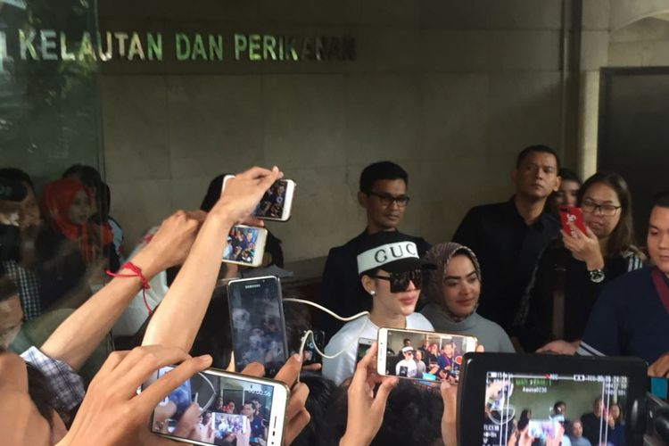

Syahrini Dapat 18 Pertanyaan oleh Penyidik Bareskrim Polri
TRI SUSANTO SETIAWAN
KabarKabur.com -27/09/2017, 15:23 WIB

Penyanyi Syahrini diperiksa oleh Bareskrim Mabes Polri sebagai saksi atas kasus dugaan penipuan oleh First Travel di Bareskrim Mabes Polri, Jalan Merdeka Timur, Jakarta Pusat, Rabu (27/9/2017).
KabarKabur.com - Penyanyi Syahrini mendapatkan 18 pertanyaan dari penyidik Bareskrim Polri terkait kapasitasya sebagai saksi atas kasus dugaan penipuan oleh First Travel.
"Ada 18 pertanyaan kurang lebih satu jam di dalam. Pertanyaan jelas dari bapak penyidik, berapa manajemen Syahrini membayar kepada First Travel," ujar Syahrini di Bareskrim Polri, Jalan Medan Merdeka Timur, Jakarta Pusat, Rabu (27/9/2017).
Perempuan kelahiran Bogor tersebut mengaku telah menjawab semua pertanyaan penyidik. Pertanyaan lebih tentang peran Syahrini sebagai artis yang pernah mempromosikan agen perjalanan tersebut.
"Karena kalau kita tidak salah tak ada urusan apa pun dengan hukum pidana di negeri ini, kenapa harus takut? Saya datang memenuhi panggilan Bareskrim untuk menjawab pertanyaan yang disinyalir semuanya bohong dan tidak benar," ujar dia.
Syahrini mengatakan bahwa semua urusan tentang akomodasi dan kerja sama diurus oleh manajernya, Rani. Ia mendapatkan jatah diskon berupa potongan harga dan membayar setengah dari harga normal.
Sedangkan keluarganya, kata dia, membayar secara penuh. Ia menjalani ibadah umrah bersama 12 keluarganya pada Maret 2017 lalu.
"Kerja samanya adalah saya pastinya dapat discount dari harga misalkan satu jadi setengah untuk saya. Tapi keluarga saya semuanya full membayar," ucap dia.
"Jadi tidak ada saya makan uang jemaah. Apabila saya mengetahui First Travel yang suka makan uang jamaah tak mungkin saya kerja sama dengan travel ini," kata dia.
penulis :Tri Susanto Setiawan
Editor :Kistyarini